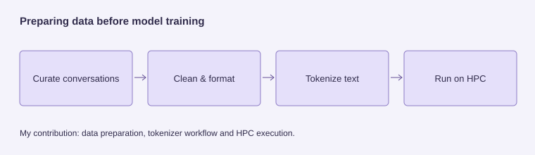

Healthcare Nanochat
I helped prepare medical conversations for a language model, then ran the training workflow on a supercomputer. My work focused on cleaning and organizing the data, preparing the tokenizer and getting the pipeline running.
The problem
Prepare medical conversations for a language model.
My contribution
Dataset curation, preprocessing, tokenizer work and running the pipeline on HPC.
Result
A completed team training workflow and medical conversational prototype.
What I learned
Data preparation and the computing environment are part of the same experiment.

My contribution
I worked on dataset curation and preprocessing, including the tokenization workflow. I was also responsible for running the pipeline on the HPC supercomputer, where I gained practical experience with Apptainer.
Preparing data for a medical language model
The team pipeline brought together general-language text and medical question–answer conversations. The report describes Unicode normalization, removal of HTML and URLs, conversation formatting, near-duplicate removal and the preparation of training, validation and test splits.
The medical-data preparation also addressed overconfident wording and unsafe dosage instructions, with dedicated safety examples for emergency escalation and diagnostic refusal.
Tokenization
The project used NanoChat’s RustBPE implementation to train a 32,768-token BPE tokenizer on a mixture of general English and medical text. Conversation tokens marked user turns, assistant turns and the end of a response.
Running the pipeline on HPC
My responsibility extended beyond preparing the data: I ran the pipeline on the supercomputer. Working with Apptainer gave me hands-on experience with containerized environments and the infrastructure needed to run a language-model workflow away from a local machine.
What I took from it
This project connected data preparation with the practical work of running model training. It deepened my understanding of tokenization, corpus preparation and HPC execution as parts of the same workflow.
Team project context
The wider team project built a GPT-style medical conversational model using NanoChat, with pretraining, medical fine-tuning and a safety-evaluation suite. It was completed as a research prototype. The source and report document the broader team implementation; my contribution was concentrated on preprocessing, tokenizer work and HPC execution.
Course context
Advanced Machine Learning for Data-driven-Health (CM2026) · KTH.
Why prepare the data as conversations?
Cleaning the text was only one step. The workflow also needed consistent user and assistant turns, duplicate handling and tokenizer preparation before training could run.